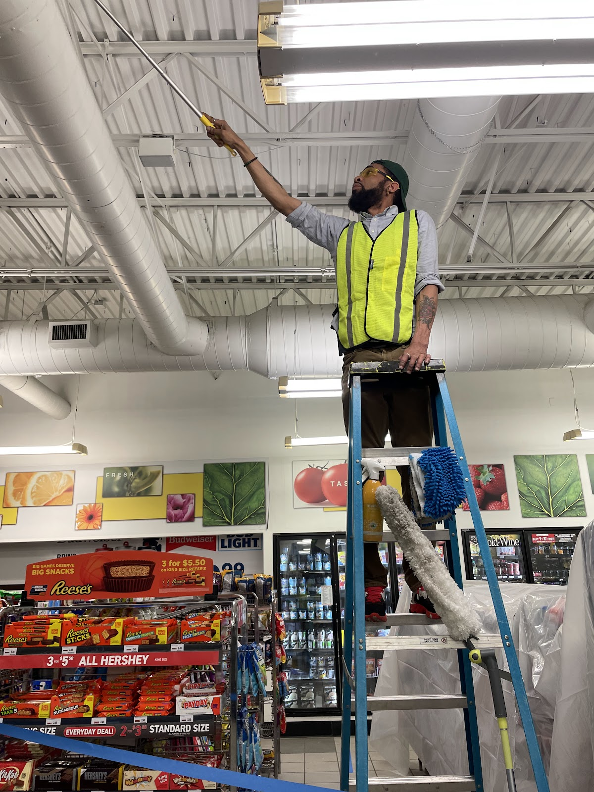

Design preview: this is a website concept prepared for Gimme The Dirt Ltd. It is not the business's live website.
Services at Gimme The Dirt Ltd
A Columbus cleaning, restoration, and facility-maintenance company serving homes and businesses since 2018.
Services
The company serves residential and commercial clients, including homeowners, property managers, small businesses, and the real estate and remodeling industries.
Janitorial and office cleaning
For offices and workplaces, serving commercial clients including small businesses and property managers.
Commercial cleaning
For commercial properties and the businesses that use them, including clients in the real estate and remodeling industries.
Post-construction cleanup
Cleanup once construction work is finished, for residential and commercial clients.
Upholstery and sofa cleaning
For upholstered furniture in homes and businesses, including sofas.
Facility maintenance and restoration
For facilities used by residential and commercial clients, covering both maintenance and restoration work.
Handyman-type projects
Smaller handyman-type projects, as listed by the company on Expertise.
Work photos

Photo from Gimme The Dirt Ltd's Google listing: a worker mopping a commercial floor.

Photo from Gimme The Dirt Ltd's Google listing: a worker deep-cleaning a kitchen.

Photo from Gimme The Dirt Ltd's Google listing: a worker on a ladder doing high dusting in a commercial store.
Contact
Call +1 614-407-4065
Gimme The Dirt Ltd serves Columbus, OH. Questions? Call +1 614-407-4065.
Website concept prepared by Freightfolio. This design preview is not the business's live website. Photos on this page: real kitchen, commercial floor, and commercial high-dusting photos from the company's Google listing.